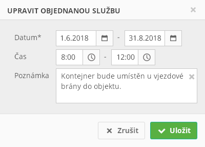

Stručný popis
Formulář pro editaci Objednaná služba, která je předána na vstupu formuláře.
Uživatelské rozhraní
Drátový diagram

Přehled UI komponent
| Callout | Komponenta | Nadpis | Typ komponenty | Příklad hodnoty | Hodnota | Výchozí hodnota | Formát | Zpřístupněná | Viditelná | Chování | Validace | Poznámka |
|---|---|---|---|---|---|---|---|---|---|---|---|---|
| 1 | Datum od | Datum* | DatePicker | 4. 6. 2018 | Entita Objednaná služba. | – | Pokud je Objednaná služba v jednom z uvedených stavů (atribut Stav):
| Vždy | Po nastavení Datum od, pokud je Datum do rovno NULL, nebo Datum do < Datum od, se Datum do nastaví na Datum od. | Větší nebo rovno dnešní datum. | – | |
| 2 | Datum do | – | DatePicker | 16. 12. 2018 | Entita Objednaná služba. | – | Pokud je Objednaná služba v jednom z uvedených stavů (atribut Stav):
| Vždy | – | Větší nebo rovno Datum od. | – | |
| 3 | Čas od | Čas | TimePicker | 8:00 | Entita Objednaná služba. | – | <Čas realizace od> | Pokud je Objednaná služba v jednom z uvedených stavů (atribut Stav):
| Vždy | Po nastavení Čas od, pokud je Čas do roven NULL, nebo Čas do < Čas od, se Čas do nastaví na Čas od. | Může být NULL. | – |
| 4 | Čas do | – | TimePicker | 15:00 | Entita Objednaná služba. | – | <Čas realizace do> | Pokud je Objednaná služba v jednom z uvedených stavů (atribut Stav):
| Vždy | – | Pokud je Čas od roven NULL:
Jinak:
| – |
| 5 | Poznámka | Poznámka | MultilineTextBox | Kontejner bude umístěn u vjezdové brány do objektu. | Entita Objednaná služba. | – | Vždy | Vždy | – | Maximálně 255 znaků. | – |
Grafický návrh

Revize
22. 5. 2019: Tomáš Nadrchal
| Odkaz | Stručný popis změny/doplnění |
|---|---|
| Uživatelské rozhraní | Doplněna omezení v dostupnosti ovládacích prvků (naznačeno modře). |